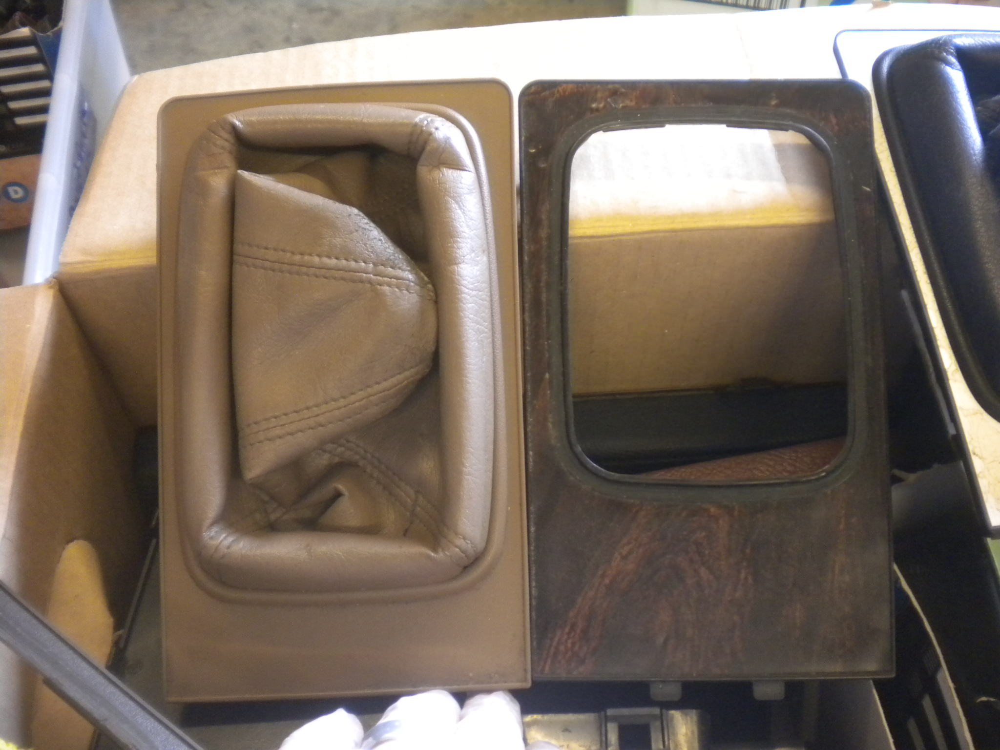

-
The front-cover trim for the shift boot on the 84-85 looks like it uses a rectangular gasket to adhere the boot to the trim. It has the consistency of something you'd stick an emblem on with. The gasket isn't even listed as a part; only the boot and the cover. (See pic below). So, what is the best adhesive to stick the boot back onto the trim? Super glue is efficient but messy and dries on white. Gorilla glue hasn't worked for certain applications in the past.
Z31_Console_Diagram.jpgLast edited by daniel_pearce; 10-27-2017, 01:36 PM. -
have you taken it apart and inspected it? remove the mounting plate with the boot attached if you haven't already (no need to remove the entire center console)
if there's not boot tabs or screw holes, then there must have been a change after the 85 year. on my 87, the top plate doesn't have a gasket, but it has little mounting tabs underneath with pins/screws that secure the boot to the plate. as far as a good adhesive, you've already listed the ones I would try. but it might be easier to just get the boot and plate from a Zenki car. still looks stock. what I ended up doing with mine was getting a new boot. I got a custom leather boot made for the Z31 from redline goods online. it installs exactly the same as the stock one. little holes for the pins to go through. and looks great to boot
if you want stock 84/85, I'd just get a new plate/boot assembly either new if available, or used from 300zxpartsforyou. up to you.
Bon -
Whoa Bon, where are you going with this? I think you may have completely misunderstood here. No need for me to take anything apart. I got a replacement front-console trim piece to replace the original which has a few good chunks of plastic missing where they pried it loose from the center console. The previous owners must have removed it when the redid the upholstery. The front-console plate doesn't have a gasket on your 87 because they use a leather boot, not vinyl.
That said, on front-console trim for the shift boot on the 84-85, there's an adhesive gasket that sticks to the vinyl shift boot to secure it to the plate to it. I need to find a good adhesive so I can secure it nice and snug against the plate without it coming loose when shifting. I'm trying to find a better material than super glue.Last edited by daniel_pearce; 10-28-2017, 01:16 AM. -
ah, I gotcha. my mistake. I didn't know the shift boots were different.... that boot in the diagram actually resembles the one that came on the 280zx. maybe its the same.
well, as far as glues go, I would think gorilla glue would be best, but depends on the application like you mentioned. I used it on my T-top shade cups and it didn't last… probably due to extreme summer heat at my location.
one thing I can recommend that may work is called CA Glue (Cyanoacrylate) and is used in scale plastic model building. I have used it on my own models, but not on my actual car lol. so....
https://www.hobbylinc.com/ca-super-glue-accelerator
1. it bonds very quickly. If you use an accelerator with it, it will bond instantly and be permanent, so you need to make sure to be very careful and precise during the application, because its kind of a one shot deal… once you use it, the accelerator makes it harden instantaneously, so make sure its correct because you can't change it back once its on there.
2. don't get the stuff on your fingers.... think superglue on steroids
3. it shouldn't leave a white foggy residue unless you apply it to clear parts, like glass or any clear plastic.
might be worth a try, but read up on its application first. if that doesn't work, you could try using a two part epoxy like JB weld or something similar.
Hope it works for ya
Bon -
Yeah, early models have the smaller hole / no screws. The later model should work fine too, since it's bigger. I don't remember there being any adhesive though, can you post a pic of what part your talking about?
On my 85 I remember the boot going over the tabs on the under side.
Early model left, late model right:
Late model left, Early model right: 
Last edited by Dunkine; 10-28-2017, 03:39 PM. -
Early model, right; same as the on in the second picture. I just ordered one. There's a sticky, black adhesive element that goes around the port to secure the shift boot. Maybe someone cleaned if off the one you got so you didn't realize it came with it. -
I suppose I could use the DURO All Purpose Spray Adhesive if I masked off areas that I didn't want the spray to get on. Only problem is it dries very quickly so I'd have to work fast. There's also Bind-ALL Guitar Binding Trim. Not really meant for car interior trim, but it can be used for gluing and binding trims like ABS Plastic and Vinyl.
Bind_All.jpg -
I wonder if this Bind-ALL would work to get my T-Top shade cups to hold and stay up on the t-top glass? clear sealant, super glue, even gorilla has all failed.
-
I used a razor blade and got rid of the ones on my 2+2. The shades were nasty (previous owner had a doggy) and the one 2+2 parts car I have didn't have'em.
So I got rid of the "buttons" and tinted them instead. I was out of 5%, so I double up 20% and I really like not dealing with the shades. I'm going to tint them again with 5% at some point, they need to be a little darker in the summer.
Last edited by Dunkine; 11-01-2017, 10:41 AM. Reason: pic size. -
i've thought about that but i need window tint and t-top shades because of my location. its very hot here in the middle east and shades are a must. when i bought the car it didn't even have shades and the cups were missing. so i got a hold of some and glued those cups but they just don't seem to stay. i don't know what the heck nissan used but i'd sure like to know
BonComment
-
I have the 2+2 so the AE top wouldn't fit but I do like the mirrored look. the dot matrix, is that the tint that comes from factory? if so, my mine have it. I also put black tint over that as well… still freaking hot!
it would probably have to be stripped somehow, but I don't know how that could be done without messing up the glass.
Comment
-
yeah I kinda figured that matrix was factory and cant be removed. like I said before, the shade cups were already missing when I first got the car. I thought someone had removed them and tinted the glass, but after close inspection I realized that didn't look like normal tint film. I'm going to try sealing the cups up there again using something other type of adhesive. what the heck did Nissan actually use I wonder?")
Comment
-
hehe agreed. well, I have some JB weld so I'm gonna give that a shot. thanks for your input -
I have the same problem, and when it got hot outside one of them would keep becoming unglued. The silicone sealant will work. You just have to scrape every bit of old compound (super glue, sealant) of the t-top fastener with an X-Acto knife, and clean the t-tops with glass cleaner or alcohol. If the surface of the glass isn't clean, it won't adhere to the glass very well. Screw the fastener back onto the T-Top once it's clean, then apply the sealant to the fastener. Make sure you fill in any gaps in the fastener. The more surface area there is, the better it will hold.


Copyright © 2006–. All rights reserved. Privacy Policy
Comment